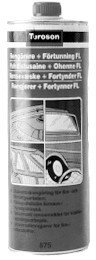

93 160 907 Cleaning Agent
93 160 907 Cleaning Agent

Specifications
Motip Dupli. Universal agent. 400 ml spray.
Range of application
See Service Manual.
Packaging
1
Transport
The product is classified as dangerous goods when transporting. Special regulations apply to packaging, marking and transport, therefore existing lead times cannot be guaranteed.
Directives
The product is extremely flammable and an irritant. Irritates respiratory system. Repeated contact can result in dry cracked skin. Fumes can make you drowsy and dazed. Hazardous to marine organisms, can have long-term impact on marine environments. Pressurised container. Do not exert to direct sunlight or temperatures above + 50 °C. Do not puncture or incinerate. Applies also to empty container. Do not spray towards naked flames or red-hot materials. Store away from sources of ignition - No smoking. in case for contact with eyes, ring's immediately with plenty of water and seek medical help. Avoid inhaling fumes/aerosol. Do not empty in drains. Provide adequate ventilation.